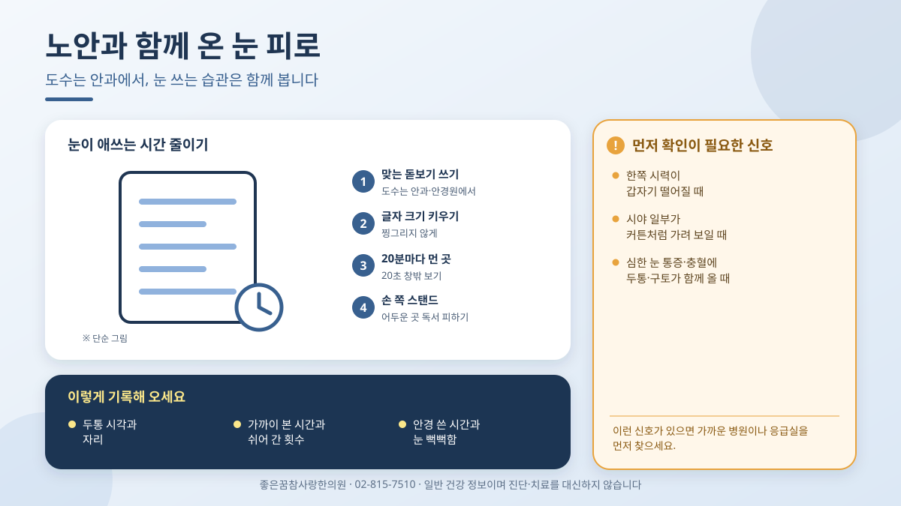

이종호 한의사 감수좋은꿈참사랑한의원 대표원장 (한의사 면허번호 19769)발행 2026-11-26 · 수정 2026-11-26
이 글의 차례
식당에서 메뉴판을 받아 들었는데 글씨가 흐릿합니다. 저도 모르게 팔을 쭉 뻗어 메뉴판을 멀리 들고, 눈을 가늘게 뜨고 나서야 글자가 또렷해집니다. 맞은편에 앉은 사람이 웃으며 "노안 왔네" 하는데, 웃어넘기면서도 마음 한쪽이 서운해집니다.
노안은 가까운 것을 볼 때 초점을 맞추는 힘이 서서히 줄어드는 변화입니다. 병이라기보다 누구에게나 찾아오는 눈의 나이 듦에 가깝고, 대개 마흔 무렵을 지나면서 하나둘 느끼기 시작합니다. 원래 근시가 있던 분은 안경을 벗으면 가까운 것이 잘 보여 조금 늦게 알아차리기도 합니다.
그런데 진료실에서 노안 이야기를 꺼내시는 분들은 글씨가 흐린 것보다 다른 불편을 더 많이 말씀하십니다. 오후만 되면 눈이 뻐근하고 무겁다, 책을 보다 보면 이마와 관자놀이가 조여 온다, 저녁이면 목과 어깨까지 뻣뻣하다. 가까운 것을 보느라 눈이 애쓰는 만큼 피로가 쌓이기 때문입니다.
노안 자체를 되돌리기는 어렵지만, 그로 인한 눈 피로와 두통은 생활에서 줄여 볼 수 있는 부분이 많습니다. 저는 안과에서 도수를 맞추는 일을 가장 먼저 권하고, 그 위에 눈을 쓰는 습관과 목·어깨의 긴장, 잠을 함께 살핍니다.
노안은 어떤 변화인가요?
눈 안에는 수정체라는 투명한 렌즈가 있습니다. 멀리 볼 때는 수정체가 얇아지고, 가까이 볼 때는 주변 근육이 수정체를 두툼하게 만들어 초점을 맞춥니다. 젊을 때는 이 렌즈가 말랑해서 가까운 곳에도 쉽게 초점이 맞습니다.
나이가 들면서 수정체는 조금씩 단단해지고, 초점을 맞추는 근육이 애를 써도 예전만큼 두툼해지지 않습니다. 그래서 가까운 글씨가 흐려지고, 멀리 들어야 또렷하게 보이게 됩니다. 이 변화는 몇 년에 걸쳐 천천히 진행되며, 그 사이 돋보기 도수도 조금씩 바뀌게 됩니다.
노안 초기에는 아침에는 괜찮다가 저녁이 되면 가까운 글씨가 더 흐려지는 흐름을 많이 겪습니다. 하루 종일 초점을 맞추느라 눈 근육이 지쳤기 때문입니다. 어두운 곳에서 더 안 보이는 것도 흔한 모습인데, 어두우면 동공이 커져 초점이 더 흐려지기 때문입니다.
왜 노안이 오면 눈이 피로하고 머리가 아플까요
노안이 시작되면 눈은 흐려진 초점을 맞추려고 계속 힘을 씁니다. 초점 근육이 하루 종일 긴장한 채로 있으면 눈이 뻐근하고 무겁게 느껴지고, 그 긴장이 눈썹 주변과 이마, 관자놀이로 번져 두통으로 이어집니다. 진료실에서 흔히 겹쳐 있는 이유는 이렇습니다.
- 도수가 맞지 않는 안경이나 돋보기를 쓰는 경우
- 돋보기 없이 눈을 찡그리며 버티는 경우
- 가까운 화면과 먼 곳을 자주 번갈아 보는 업무
- 화면을 볼 때 눈 깜빡임이 줄어 눈이 마르는 경우
- 글씨를 보려고 고개를 앞으로 내밀어 목과 어깨가 굳는 경우
- 어두운 곳에서 작은 글씨를 보는 습관
- 잠이 부족하고 긴장이 이어진 시기
특히 고개를 앞으로 빼는 자세는 놓치기 쉽습니다. 흐린 글씨를 보려고 얼굴을 화면 쪽으로 가까이 가져가면 목 뒤 근육이 계속 버텨야 하고, 그 긴장이 뒤통수와 정수리로 올라가 두통을 키우는 경우가 많습니다.
한의학에서는 나이가 들며 간과 신의 기운이 줄어 눈이 쉽게 마르고 지친다고 표현하기도 합니다. 진찰에서 쓰는 전통적인 설명 방식이며, 안과 검사와 생활 습관을 함께 놓고 판단합니다.
비슷해 보여도 나눠 보는 것들
가까운 것만 흐리고 멀리는 잘 보인다면 노안의 흐름에 가깝습니다. 멀리 있는 것도 흐리고 안경을 써도 또렷하지 않다면 다른 굴절 이상이나 수정체 상태를 안과에서 확인받는 것이 좋습니다.
눈이 뻑뻑하고 모래가 들어간 듯하며, 인공눈물을 넣으면 잠깐 편해진다면 안구건조가 함께 있는 경우입니다. 노안과 안구건조는 비슷한 시기에 함께 오는 경우가 많아서, 둘을 함께 살펴야 눈 피로가 덜해집니다.
시야가 뿌옇고 불빛 주변이 번져 보이며 밝은 곳에서 눈이 많이 부시다면 백내장 여부를 확인해 볼 필요가 있습니다. 시야 가장자리가 좁아진 느낌이나 직선이 휘어 보이는 증상이 있다면 녹내장이나 황반 쪽 검사가 필요합니다.
두통이 화면이나 책과 상관없이 아침부터 오거나, 한쪽 머리가 욱신거리며 속이 메슥거린다면 노안과는 다른 두통 흐름일 수 있습니다. 두통의 모양을 함께 기록해 오시면 나눠 보는 데 도움이 됩니다.
돋보기와 다초점 렌즈를 처음 쓸 때
돋보기를 쓰면 늙어 보일까 봐, 또는 눈이 더 나빠질까 봐 미루시는 분이 많습니다. 하지만 돋보기를 쓴다고 노안이 빨라지지는 않습니다. 오히려 눈을 찡그리며 버티는 시간이 줄어 눈 피로와 두통이 덜하다고 말씀하시는 분이 많습니다.
돋보기는 안과나 안경원에서 지금 눈에 맞는 도수를 확인하고 맞추시길 권합니다. 편의점이나 가판대에서 산 돋보기는 두 눈의 도수 차이나 눈 사이 거리를 맞추지 못해 오래 쓰면 오히려 피로할 수 있습니다. 화면을 보는 거리와 책을 보는 거리가 다르다면 그 거리에 맞춰 상의해 보세요.
다초점 렌즈는 처음 쓰면 계단을 내려갈 때 바닥이 출렁여 보이거나, 고개를 어디에 둬야 할지 어색하게 느껴지기도 합니다. 대개 몇 주에 걸쳐 익숙해지지만, 계속 어지럽거나 두통이 이어진다면 안경원이나 안과에서 렌즈 위치와 도수를 다시 확인받아 보세요.
일하는 환경과 계절에 따라 달라지는 눈 피로
사무실에서 모니터와 서류, 스마트폰을 번갈아 보는 일은 노안이 시작된 눈에 특히 고됩니다. 거리가 바뀔 때마다 초점을 다시 맞춰야 하기 때문입니다. 모니터와 서류를 비슷한 거리에 두고, 서류 받침대를 화면 옆에 세워 두면 초점을 바꾸는 횟수를 줄일 수 있습니다.
운전을 많이 하시는 분은 계기판과 내비게이션 화면이 흐려 보여 불편을 느끼기도 합니다. 운전 중에는 먼 곳과 가까운 곳을 쉴 새 없이 번갈아 보게 되니, 장거리 운전 때는 한두 시간마다 쉬면서 눈을 감고 쉬는 틈을 만들어 주세요.
겨울에는 난방으로 실내가 건조해지고, 해가 짧아 어두운 시간에 가까운 일을 하는 경우가 늘어 눈 피로가 커지기 쉽습니다. 실내 습도를 조금 높이고, 저녁에 책을 볼 때는 방 전체 불과 손 쪽 스탠드를 함께 켜 두시길 권합니다.
바느질이나 뜨개질, 휴대폰 게임처럼 작은 것을 오래 들여다보는 취미가 있다면 중간중간 쉬는 시간을 정해 두세요. 재미있는 일일수록 시간 가는 줄 모르고 눈을 쓰게 되어, 끝나고 나서야 눈과 머리가 무겁다는 것을 알아차리는 경우가 많습니다.
집에서 해 볼 수 있는 간단한 자기 점검
일주일 정도 아래 질문에 답해 보시면 어느 쪽에 가까운지 보이기 시작합니다.
- 가까운 글씨만 흐린가요, 먼 곳도 흐린가요?
- 아침보다 저녁에 더 흐리고 피곤한가요?
- 화면이나 책을 본 시간이 길수록 두통이 심해지나요?
- 눈이 뻑뻑하거나 시린 느낌이 함께 있나요?
- 글씨를 볼 때 고개를 앞으로 내밀고 있나요?
- 지금 쓰는 안경을 맞춘 지 얼마나 되었나요?
두통이 생겼을 때 하던 일을 함께 적어 두세요. 서류를 보던 중이었는지, 스마트폰을 보던 중이었는지, 운전 중이었는지에 따라 눈을 쓰는 거리가 달라서 살펴볼 방향이 조금씩 달라집니다.
먼저 이렇게 여쭙니다
처음 오시면 저는 대략 이런 순서로 여쭙니다. 미리 떠올려 오시면 이야기가 훨씬 수월해집니다.
- 가까운 것이 흐려지기 시작한 것은 언제쯤인가요?
- 안경이나 돋보기는 언제 맞추셨나요? 마지막 안과 검사는 언제였나요?
- 두통은 어느 자리에서, 하루 중 언제 주로 오나요?
- 하루에 화면이나 서류를 가까이 보는 시간은 어느 정도인가요?
- 목과 어깨가 굳는 느낌, 이를 꽉 무는 습관이 있나요?
- 잠과 긴장의 흐름은 요즘 어떠신가요?
쓰시는 안경과 돋보기를 진료 때 가져와 주시면 좋습니다. 어떤 거리에서 어떤 안경을 쓰시는지 함께 보면 생활에서 바꿔 볼 부분이 더 잘 보입니다.
가족 가운데 녹내장이나 백내장을 앓으신 분이 있는지도 함께 여쭙니다. 가족력이 있다면 안과 정기 검사 주기를 조금 더 촘촘하게 잡아 보시길 권합니다.
일상에서 먼저 해 볼 수 있는 것
노안으로 인한 눈 피로는 눈이 애쓰는 시간을 줄여 주는 데서 시작합니다. 아래 가운데 하나만 골라 2주 정도 이어 가 보세요.
- 맞는 도수의 돋보기나 안경을 가까운 일을 할 때 챙겨 쓰기
- 20분 가까이 보면 20초 정도 멀리 창밖 바라보기
- 스마트폰과 화면의 글자 크기를 한두 단계 키우기
- 책이나 서류를 볼 때 손 쪽에 밝은 스탠드 켜 두기
- 화면은 눈높이보다 약간 아래, 팔 길이 정도 거리에 두기
- 의식적으로 눈을 천천히 끝까지 감았다 뜨기
글자 크기를 키우는 것을 부끄럽게 여기실 필요는 없습니다. 작은 글씨를 억지로 보는 것보다 글자를 키워 편하게 보는 쪽이 눈 피로와 두통을 줄이는 데 훨씬 도움이 될 수 있습니다.
눈이 지친 저녁에는 따뜻한 수건을 감은 눈 위에 5분 정도 올려 두세요. 눈 주변 근육이 풀리고 눈꺼풀 기름샘이 부드러워져 뻑뻑함이 덜하다고 하시는 분이 많습니다. 너무 뜨겁지 않게, 손목 안쪽에 대 보고 따뜻한 정도면 충분합니다.
목과 어깨도 함께 챙겨 주세요. 한 시간에 한 번 일어나 턱을 살짝 당겨 뒤통수를 위로 늘이듯 서 보고, 어깨를 으쓱했다 툭 떨어뜨리는 동작을 몇 번 해 보세요. 고개가 앞으로 빠지는 자세가 줄어들면 뒤통수와 관자놀이의 조이는 느낌이 덜해지는 경우가 많습니다.
한의원에서 함께 살필 수 있는 경우
- 안경 도수를 맞췄는데도 오후마다 눈이 뻐근하고 머리가 무거운 경우
- 가까운 일을 오래 하면 이마와 관자놀이가 조여 오는 경우
- 노안과 함께 눈이 마르고 시려 화면 보기가 힘든 경우
- 목과 어깨가 늘 굳어 있고 뒤통수까지 묵직한 경우
- 잠이 얕아지고 쉽게 지치는 시기와 눈 피로가 겹친 경우
좋은꿈참사랑한의원에 오시면 먼저 아래 '먼저 확인이 필요한' 신호가 없는지부터 봅니다. 그다음 맥을 짚고, 눈 주변과 관자놀이, 목 뒤와 어깨를 직접 만져 보며 굳은 자리를 확인합니다. 잠과 소화, 손발 온도의 흐름도 함께 여쭙습니다.
진찰한 내용을 바탕으로 생활에서 바꿔 볼 것 하나와 함께 침, 추나, 온열 관리, 한약 상담 가운데 지금 상태에 맞는 것을 정합니다. 한약을 상의할 때는 드시는 약을 모두 확인하고 신중하게 정합니다.
안과에서 처방받은 안약이나 정기 검사는 그대로 이어 가시면서 함께 살핍니다. 한의원 진료는 안경 도수를 맞추는 일을 대신하지 않으며, 그 위에서 눈을 쓰는 습관과 목·어깨 긴장을 함께 돌보는 것이라고 생각해 주시면 됩니다.
이렇게 기록해 오시면 상담이 쉬워집니다
눈 피로와 두통은 하루 동안 눈을 쓴 양에 따라 달라집니다. 2주 정도 간단히 적어 오시면 흐름이 훨씬 잘 보입니다.
- 두통이 생긴 시각과 자리(이마, 관자놀이, 뒤통수)
- 0에서 10 사이 눈 피로와 두통 점수
- 그날 가까이 본 시간과 쉬어 간 횟수
- 안경이나 돋보기를 쓴 시간
- 잠든 시각과 깬 시각
- 눈 뻑뻑함, 시림이 함께 있었는지
기록을 나란히 놓고 보면 돋보기를 쓴 날과 쓰지 않은 날, 쉬어 간 날과 몰아서 본 날의 차이가 조금씩 드러납니다.
눈의 나이와 편하게 지내기
노안은 그동안 눈이 부지런히 일해 왔다는 표시이기도 합니다. 흐려진 초점을 억지로 버티기보다, 맞는 도구와 쉬는 틈을 마련해 주는 것이 오래 편하게 지내는 길입니다.
이번 주에는 글자 크기 키우기, 혹은 20분마다 창밖 보기 하나만 골라 보세요. 다음에 오시면 2주 동안의 기록을 함께 펼쳐 놓고, 머리가 덜 아팠던 날은 눈을 어떻게 썼는지부터 찾아보겠습니다.
이런 증상은 먼저 확인이 필요합니다
- 한쪽 눈 시력이 갑자기 떨어지거나 시야 일부가 커튼처럼 가려 보이는 경우
- 눈이 갑자기 심하게 아프고 충혈되면서 두통과 구토가 함께 오는 경우
이런 신호가 있으면 한의원보다 가까운 병원이나 응급실을 먼저 찾으세요.
함께 읽으면 좋은 글
- 눈을 많이 쓴 날 눈이 무겁고 이마와 관자놀이까지 아파 오는 안정피로 두통은 어떻게 살피나요?
- 눈이 뻑뻑하고 모래가 들어간 듯 따갑거나 쉽게 피로한 안구건조증은 어떻게 살피나요?
- 녹내장이나 황반변성으로 안과 치료를 받는 중에 생활 속 눈 관리는 어떻게 함께 살피나요?
- 스트레스를 받으면 뒷목이 당기고 머리가 아픈 긴장성 두통은 어떻게 살피나요?
- 모니터를 오래 보고 나면 눈이 뻑뻑하고 이마와 관자놀이가 아플 때는 어떻게 하나요?

여쭙는 것
- 가까운 것이 흐려지기 시작한 것은 언제쯤인가요?
- 안경이나 돋보기는 언제 맞추셨나요? 마지막 안과 검사는 언제였나요?
- 두통은 어느 자리에서, 하루 중 언제 주로 오나요?
생활에서 해 볼 것
- 맞는 도수의 돋보기나 안경을 가까운 일을 할 때 챙겨 쓰기
- 20분 가까이 보면 20초 정도 멀리 창밖 바라보기
- 스마트폰과 화면의 글자 크기를 한두 단계 키우기
한의원에서 함께 살필 것
- 안경 도수를 맞췄는데도 오후마다 눈이 뻐근하고 머리가 무거운 경우
- 가까운 일을 오래 하면 이마와 관자놀이가 조여 오는 경우
- 노안과 함께 눈이 마르고 시려 화면 보기가 힘든 경우
먼저 확인이 필요한 신호
- 한쪽 눈 시력이 갑자기 떨어지거나 시야 일부가 커튼처럼 가려 보이는 경우
- 눈이 갑자기 심하게 아프고 충혈되면서 두통과 구토가 함께 오는 경우
한눈에 보는 표
| 구분 | 핵심 |
|---|---|
| 여쭙는 것 | 가까운 것이 흐려지기 시작한 것은 언제쯤인가요? 안경이나 돋보기는 언제 맞추셨나요? 마지막 안과 검사는 언제였나요? |
| 생활에서 해 볼 것 | 맞는 도수의 돋보기나 안경을 가까운 일을 할 때 챙겨 쓰기 20분 가까이 보면 20초 정도 멀리 창밖 바라보기 |
| 한의원에서 함께 살필 것 | 안경 도수를 맞췄는데도 오후마다 눈이 뻐근하고 머리가 무거운 경우 가까운 일을 오래 하면 이마와 관자놀이가 조여 오는 경우 |
| 먼저 확인이 필요한 신호 | 한쪽 눈 시력이 갑자기 떨어지거나 시야 일부가 커튼처럼 가려 보이는 경우 눈이 갑자기 심하게 아프고 충혈되면서 두통과 구토가 함께 오는 경우 |
자주 묻는 질문
돋보기를 쓰면 노안이 더 빨리 오나요?
돋보기를 쓴다고 노안이 빨라지지는 않습니다. 오히려 눈을 찡그리며 버티는 시간이 줄어 눈 피로와 두통이 덜해지는 경우가 많습니다. 도수는 안과나 안경원에서 확인하고 맞추세요.
눈 운동을 하면 노안이 좋아지나요?
수정체가 단단해지는 변화 자체를 되돌리기는 어렵습니다. 다만 먼 곳 바라보기, 깜빡임, 따뜻한 찜질처럼 눈 주변 근육을 쉬게 하는 습관은 눈 피로를 줄이는 데 도움이 될 수 있습니다.
노안 때문에 머리가 아픈 것인지 어떻게 알 수 있나요?
가까이 본 시간이 길수록 이마와 관자놀이가 조여 오고, 쉬면 가벼워진다면 눈 피로와 관련된 두통일 가능성이 있습니다. 아침부터 아프거나 양상이 다르다면 두통 기록을 함께 가져와 주세요.
노안과 함께 오는 눈 피로도 한의원에서 볼 수 있나요?
안경 도수를 먼저 맞추신 뒤, 눈 주변과 목·어깨 긴장, 잠의 흐름을 함께 살필 수 있습니다. 진찰 뒤 지금 상태에 맞는 방법을 정합니다.
스마트폰을 볼 때 돋보기를 써야 하나요?
글자 크기를 키워도 흐리고 눈이 피곤하다면 가까운 거리용 안경을 상의해 보시길 권합니다. 스마트폰을 보는 거리를 알려 주시면 도수를 정할 때 도움이 됩니다.
좋은꿈참사랑한의원은 재진 때 지난번 이야기부터 이어서 여쭙니다. 진료시간과 예약은 오시는 길에서 확인하세요.
어디서 상담받을 수 있나요?
좋은꿈참사랑한의원은 서울 동작구 만양로2길 2 신성빌딩 3층·5층(서울 동작구 상도동, 7호선 상도역 3번 출구 근처)에 있습니다. 한의사 3명(이종호 대표원장, 조영기 수석진료원장, 정원영 진료원장)이 진료합니다. 진료시간은 평일 09:30~20:00(점심 13:00~14:00), 토·일·공휴일 09:30~15:00이며, 방문 전 전화로 확인을 권합니다. 예약은 네이버 예약, 카카오톡 상담, 전화 02-815-7510로 받습니다.
이 글은 일반적인 건강 정보이며 개인의 진단이나 치료를 대신하지 않습니다. 증상이 있거나 복용 중인 약이 있다면 진료를 통해 확인하세요. 치료 효과는 개인마다 다를 수 있습니다.
작성 기준: 일반적으로 알려져 있는 건강 정보를 참고해 정리했습니다(대표원장 감수). 증상 기록은 1~2주 동안 하루 1회, 비슷한 시간에 적어 오시면 지난 상태와 비교하기 쉽습니다.